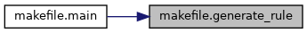
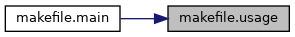

Functions | |
| def | generate_rule (fname) |
| def | usage (argv0) |
| def | main (argv) |
Function Documentation
◆ generate_rule()
| def makefile.generate_rule | ( | fname | ) |
Definition at line 6 of file makefile.py.
Referenced by main().
Here is the caller graph for this function:

◆ main()
| def makefile.main | ( | argv | ) |
Definition at line 30 of file makefile.py.
References generate_rule(), and usage().
Here is the call graph for this function:

◆ usage()
| def makefile.usage | ( | argv0 | ) |
Definition at line 27 of file makefile.py.
Referenced by main().
Here is the caller graph for this function:
